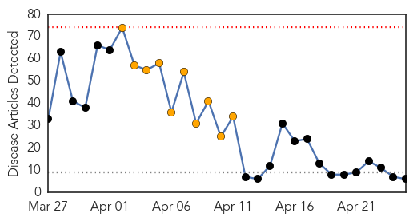
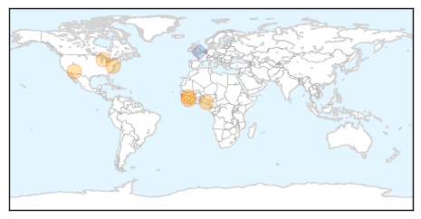
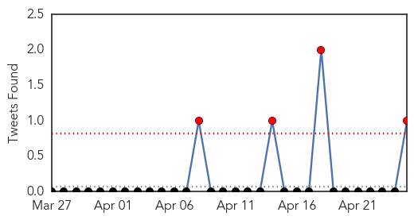
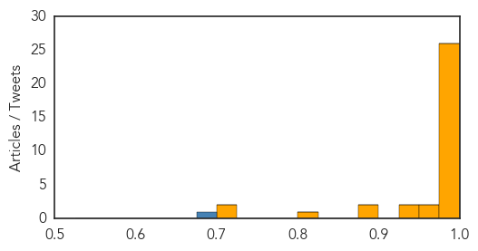

Ebola
30-Day Web Trend
0 alerts, 10 warnings

30-Day Twitter Trend
1 alerts, 0 warnings

Article Locations

Article Confidences

Top Articles:
Top Tweets:
- 0.893
- RT: WHO says epi situation in Guinea ebola outbreak is improving; four locations past 1 incubation period without a case h…
MERS
30-Day Web Trend
15 alerts, 0 warnings

30-Day Twitter Trend
4 alerts, 0 warnings

Article Locations

Article Confidences
Top Articles:
- 1.000
- Canada on guard for MERS virus as WHO warns exported cases ‘very likely’
- 1.000
- Public Health Notice: Middle East Respiratory Syndrome Coronavirus (MERS-CoV)
- 0.999
- Saudi MERS cases surge but experts at loss to explain spike
- 0.999
- Exported MERS cases ‘very likely,’ WHO warns; Canada on the lookout
- 0.999
- Saudi MERS cases surge but experts at loss to explain spike
- 0.999
- Watch for exported MERS cases, WHO warns
- 0.999
- Sharp Rise in MERS Cases as Virus Spreads
- 0.999
- CJAD 800 – News. Talk. Radio. :: Exported MERS cases 'very likely,' WHO warns; Canada on the lookout, PHAC says :: News
- 0.998
- 2 more deaths from MERS virus
- 0.998
- MERS Watch: Exported Cases 'Very Likely'
- 0.998
- MERS transmission cause of concern
- 0.998
- King bids to reassure Saudis as MERS deaths hit 85
- 0.998
- Experts cast doubt on Saudi push for Middle East virus vaccine
- 0.997
- Saudi Sniffs at Spreading Health Crisis
- 0.997
- WHO vigilant on new Middle East coronavirus developmentsHealthcare
- 0.997
- Experts cast doubt on Saudi push for virus vaccine
- 0.997
- Experts cast doubt on Saudi Arabia’s push for Middle East virus vaccine
- 0.997
- 8 more Mers cases negative in UAE - Emirates 24
- 0.997
- Experts cast doubt on Saudi push for Middle East virus vaccine
- 0.997
- Experts cast doubt on Saudi push for Middle East virus vaccine
- 0.996
- Why a deadly virus in the Middle East has the entire world on alert
- 0.996
- Jeddah jittery over MERS
- 0.996
- 21 MERS cases cited in Mideast; ECDC expects more in Europe
- 0.990
- DOH: 11 more Etihad passengers from Regions 12 and 9 free of MERS-CoV
- 0.988
- Saudi king visits Jeddah as two more die of Mers Bhatkallys.com
- 0.987
- Saudi Arabia’s MERS virus outbreak demands transparency
- 0.968
- DOH closing in on 4 Etihad passengers
- 0.954
- Expert named to combat MERS
- 0.949
- Expert named to combat MERSHealthcare
- 0.941
- Schools urged to cancel field trips
- 0.898
- MERS battle: Fakeih orders new measuresHealthcare
- 0.876
- MERS control measures launched
- 0.817
- All suspected carriers negative: Region 7 is still MERS-CoV-free
- 0.717
- Hospital probed for not reporting suspected case
- 0.704
- S’pore travel agents say MERS in Saudi not affecting pilgrimages
Top Tweets:
- 0.680
- RT: Editorial MERS-CoV–two years into the epidemic; graph depicting cases by month for 345 notified cases since 2012 http:…